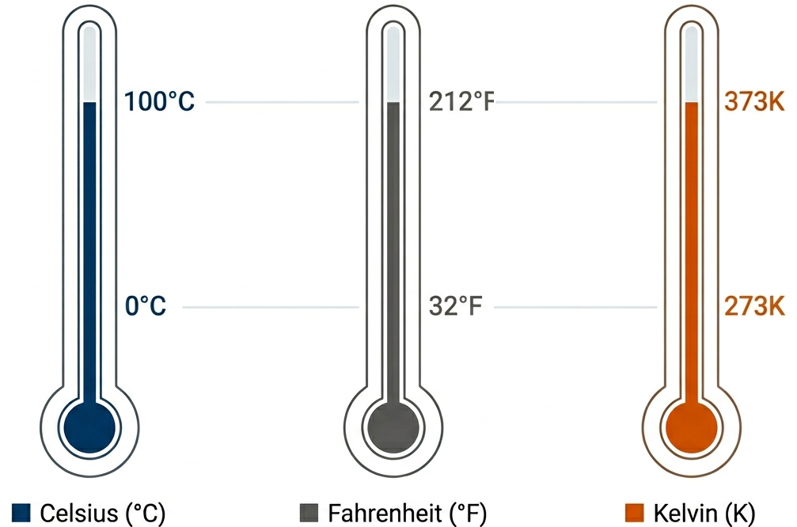
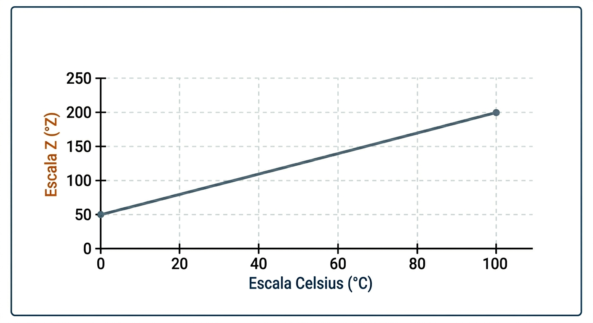

2º Ano | Aula 01: Termometria (Escalas Termométricas)
📚 Resumo
Diferenciamos a Indicação ($\theta$), que é o valor pontual lido no termômetro, da Variação ($\Delta \theta$), que representa o intervalo de mudança térmica.
A indicação refere-se ao estado térmico atual. Para converter um valor pontual entre escalas, comparamos a posição do mercúrio em relação aos pontos fixos (gelo e vapor).
Atenção: Na escala Kelvin, nunca usamos o símbolo de grau (°), pois ela parte do zero absoluto.

Figura 1: Comparação dos pontos fixos (fusão do gelo e ebulição da água) entre as escalas Celsius, Fahrenheit e Kelvin.
2. Variação de Temperatura ($\Delta \theta$)
Quando dizemos que a temperatura variou, estamos falando do tamanho dos "degraus" da escala. Como a escala Celsius e Kelvin possuem 100 divisões entre o gelo e o vapor, seus degraus são iguais.
Regra de Ouro: Uma variação de 1 °C é igual a uma variação de 1 K, mas equivale a uma variação de 1,8 °F.
3. O Zero Absoluto
O 0 K representa a imobilidade molecular teórica. Em Celsius, esse valor corresponde a -273,15 °C. Não existem temperaturas negativas na escala Kelvin.
💡 Física em Ação
🏥 Medicina
Um médico precisa saber a indicação exata (ex: 39 °C) para diagnosticar febre. A variação (ex: baixou 2 °C) indica se o remédio funcionou.
🏗️ Engenharia
Ao construir pontes, engenheiros calculam a variação térmica anual para deixar frestas de dilatação, evitando que a estrutura rache.
✅ 5 Questões Resolvidas (R 1 a 5)
R 1: Indicação Específica
Enunciado: Um termômetro em Fahrenheit marca 50 °F. Qual a indicação em Celsius?
Enunciado: Um aumento de 50 K equivale a qual aumento em Fahrenheit?
Resolução: Como $\Delta K = \Delta C$, usamos $\frac{50}{5} = \frac{\Delta \theta_F}{9} \implies \Delta \theta_F = 90 °F$.
🎓 TESTES (T 11 a 15)
T 11: (UFMG) Indicação vs Variação
Um termômetro graduado em Celsius indica 30 °C. Se a temperatura subir 10 °C, os novos valores em Fahrenheit para indicação e variação serão, respectivamente:
A) 104 °F e 18 °F B) 86 °F e 50 °F C) 40 °F e 10 °F D) 104 °F e 50 °F E) 86 °F e 18 °F
A temperatura Kelvin de um corpo que está a 27 °C é:
A) 300 K B) 273 K C) 27 K D) -246 K E) 327 K
Resolução: Alternativa A. $27 + 273 = 300 K$.
T 13: (UNESP) Escala Fahrenheit
A diferença entre as indicações de dois termômetros, um em Celsius e outro em Fahrenheit, para um mesmo corpo, é de 40 unidades. Se o Celsius indica o valor menor, essa temperatura em Celsius é:
Em um laboratório de física, um pesquisador desenvolve uma nova escala termométrica, chamada de escala X. Nessa escala, o ponto de fusão do gelo (0°C) corresponde a 50 graus e o ponto de ebulição da água (100°C) corresponde a 120 graus. Com base nesses dados, é possível determinar a temperatura de 30°C na escala X, que será de:
A) 71 graus.
B) 83 graus.
C) 60 graus.
D) 95 graus.
Resolução: Alternativa A.
Utilizamos a relação de proporcionalidade entre a escala Celsius ($C$) e a escala X ($X$):
Um certo pesquisador constrói, na Baixada Santista, um termômetro de álcool e determina que sua escala será denominada “Z”. Para calibrá-lo, ele resolve adotar como parâmetros de referência a água e outro termômetro na escala Celsius. Assim, ele constrói um gráfico, como apresentado, relacionando as duas escalas. Dessa forma é correto afirmar que, em condições normais:

A) os valores atribuídos ao ponto de fusão do gelo nas duas escalas são iguais.
B) os valores atribuídos ao ponto de ebulição da água nas duas escalas são iguais.
C) a escala Z é uma escala centígrada.
D) o valor de 120 °Z equivale a 60 °C.
E) o valor de 60 °C equivale a 140 °Z.
Resolução: Alternativa E.
a. Os valores atribuídos ao ponto de fusão do gelo NÃO são iguais 0 é diferente de 50.
b. Os valores atribuídos ao ponto de ebulição da água NÃO são iguais 100 é diferente de 200.
c. A escala Z NÃO é uma escala centígrada, pois de gelo a vapor possuí 150°.
Utilizando a fórmula de conversão baseada nos pontos do gráfico: